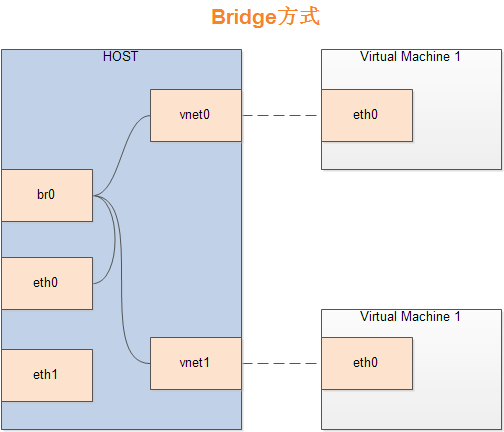

桥接模式网络配置
桥接模式原理
Bridge方式，即虚拟网桥的网络连接方式，使客户机与子网中的机器可以下相互通讯，此时虚拟机为网络中具有独立IP的主机。

如图所示，网桥的基本原理是创建一个桥接接口br0，在物理网卡与虚拟网络接口之间传递数据。
在host机器中配置桥接网络
确认网卡是否正常工作
要使用桥接首先得确保Host主机的网卡可以工作且能为guest虚拟机提供相同的网络支持，下面的示例说明了网卡的配置，且可被外部访问，在这个例子中，使用了ens33网卡。（ens33网卡可为任意命名）
[root@MiWiFi-R1CM-srv ~]# ifconfig
ens33: flags=4163<UP,BROADCAST,RUNNING,MULTICAST> mtu 1500
inet6 fe80::20c:29ff:feae:36e2 prefixlen 64 scopeid 0x20<link>
ether 00:0c:29:ae:36:e2 txqueuelen 1000 (Ethernet)
RX packets 4862 bytes 738910 (721.5 KiB)
RX errors 0 dropped 0 overruns 0 frame 0
TX packets 142 bytes 14404 (14.0 KiB)
TX errors 0 dropped 0 overruns 0 carrier 0 collisions 0
新建桥接配置文件
桥接配置文件的位置在 /etc/sysconfig/network-scripts/下，修改之前记得cp备份一下
cd etc/sysconfig/network-scripts
创建新的bridge配置文件
vi ifcfg-br0
编辑配置文件
（DHCP）
ifcfg-br0
DEVICE=br0
TYPE=Bridge
NM_CONTROLLED=no
BOOTPROTO=dhcp
ONBOOT=yes
同时修改ifcfg-ens33
TYPE="Ethernet"
NAME="ens33"
UUID="2614c181-fcdd-4558-a643-57cf30990622"
DEVICE="ens33"
NM_CONTROLLED="no"
BRIDGE="br0"
ONBOOT="yes"
(Static ip)
ifcfg-br0
DEVICE=br0
TYPE=Bridge
NM_CONTROLLED=no
BOOTPROTO=static
IPADDR=10.10.1.152
NETMASK=255.255.255.0
ONBOOT=yes
ifcfg-ens33
DEVICE=eth0
TYPE=Ethernet
HWADDR=00:14:5E:C2:1E:40
ONBOOT=yes
NM_CONTROLLED=no
BRIDGE=br0
重启网络服务
service network restart
验证配置是否成功
[root@MiWiFi-R1CM-srv network-scripts]# ifconfig
br0: flags=4163<UP,BROADCAST,RUNNING,MULTICAST> mtu 1500
inet 192.168.31.188 netmask 255.255.255.0 broadcast 192.168.31.255
inet6 fe80::20c:29ff:feae:36e2 prefixlen 64 scopeid 0x20<link>
ether 00:0c:29:ae:36:e2 txqueuelen 1000 (Ethernet)
RX packets 11447 bytes 1546947 (1.4 MiB)
RX errors 0 dropped 0 overruns 0 frame 0
TX packets 276 bytes 34012 (33.2 KiB)
TX errors 0 dropped 0 overruns 0 carrier 0 collisions 0
ens33: flags=4163<UP,BROADCAST,RUNNING,MULTICAST> mtu 1500
inet6 fe80::20c:29ff:feae:36e2 prefixlen 64 scopeid 0x20<link>
ether 00:0c:29:ae:36:e2 txqueuelen 1000 (Ethernet)
RX packets 11505 bytes 1775615 (1.6 MiB)
RX errors 0 dropped 0 overruns 0 frame 0
TX packets 286 bytes 38936 (38.0 KiB)
TX errors 0 dropped 0 overruns 0 carrier 0 collisions 0
通过ifconfig命令可以看到出现了网桥的br0与工作的ens33两项，这时候便是配置成功了。
可以注意到ens33网络信息中心以及没有ipv4地址了，这是因为ens33的网络能力通过br0在工作，此时的网络是正常的。
可以通过brctl show命令查看网桥是否工作
[root@MiWiFi-R1CM-srv network-scripts]# brctl show
bridge name bridge id STP enabled interfaces
br0 8000.000c29ae36e2 no ens33
可以看到br0已经正常工作了
为Guest配置网络
配置Guest虚拟机的配置文件，文件在 /etc/libvirt/qeum下，修改对应配置文件的
<interface type='bridge'>
<source bridge="br0"/>
<mac address='52:54:00:55:57:e7'/>
</interface>
interface type为连接方式，这里指定为bridge
source bridge为指定主机网桥，这里我们用刚刚设置的br0
mac address是mac地址，务必唯一
现在再次启动虚拟机就可以了
[root@MiWiFi-R1CM-srv ~]# ifconfig
ens3: flags=4163<UP,BROADCAST,RUNNING,MULTICAST> mtu 1500
inet 192.168.31.213 netmask 255.255.255.0 broadcast 192.168.31.255
inet6 fe80::3887:538:fac9:bb40 prefixlen 64 scopeid 0x20<link>
ether 52:54:00:55:57:e7 txqueuelen 1000 (Ethernet)
RX packets 402 bytes 35481 (34.6 KiB)
RX errors 0 dropped 0 overruns 0 frame 0
TX packets 60 bytes 5510 (5.3 KiB)
TX errors 0 dropped 0 overruns 0 carrier 0 collisions 0
可以看到网络以及正常连上了，且网段与Host主机一致